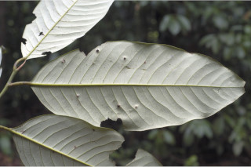
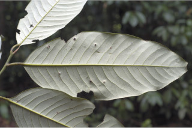

Images :


 



| Habit : | Trees up to 20 m tall, often with stilt roots . |
| Leaves : | Leaves simple , alternate , distichous ; petiole 1.5-4 cm, canaliculate , glabrous ; lamina 12-25 x 4-12 cm, variable from narrow oblong to oblong , elliptic to lanceolate , apex acute with blunt tip or obtuse , base acute to rounded , margin entire , thickly coriaceous , shining above, white glaucous beneath; midrib raised above; secondary_nerves 10-18 pairs, impressed above; tertiary_nerves obscure or broadly reticulo-percurrent when visible. |
| Inflorescence / Flower : | Flowers unisexual , dioecious , white; male flowers in axillary short umbels , 10-20 flowered; female flowers in fascicles , sessile . |
| Fruit and Seed : | Capsule , ovoid , 6 x 3 cm, densely tomentose ; seed one, ovoid , covered with orange red deeply laciniate aril . |